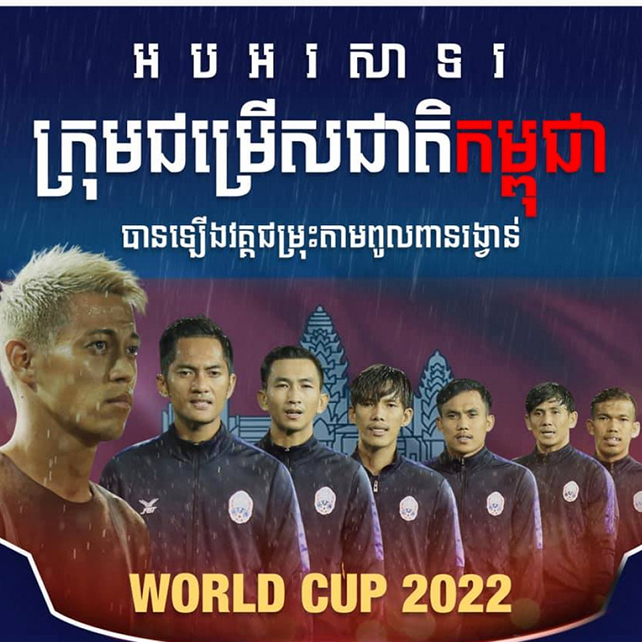
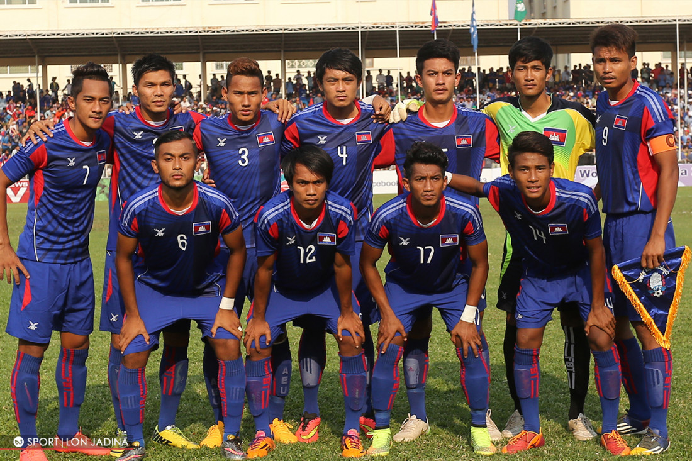
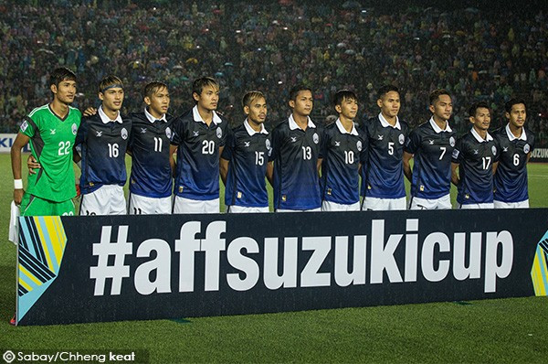
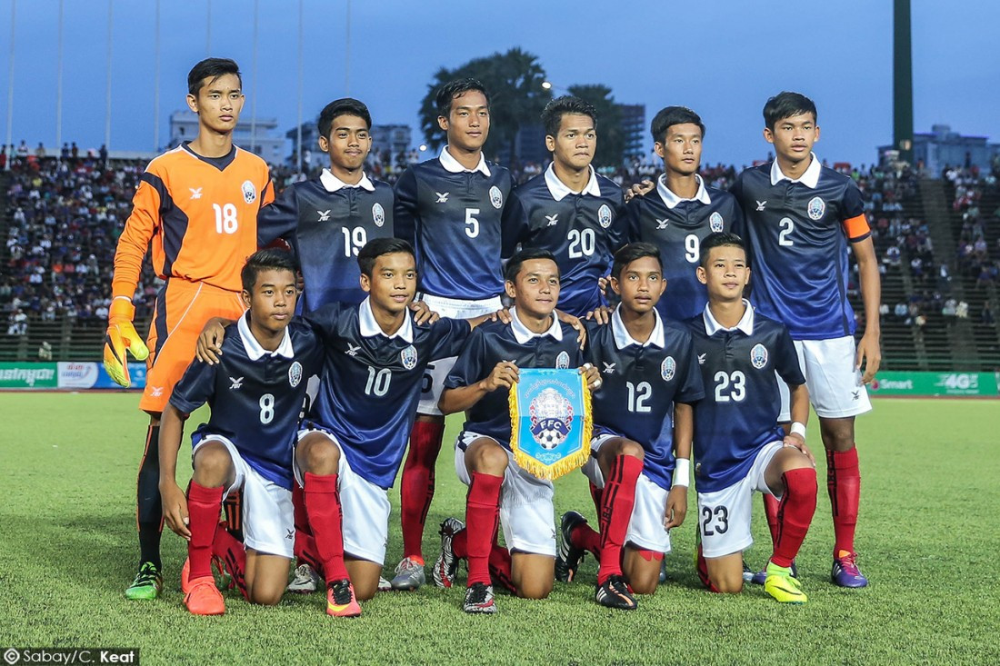
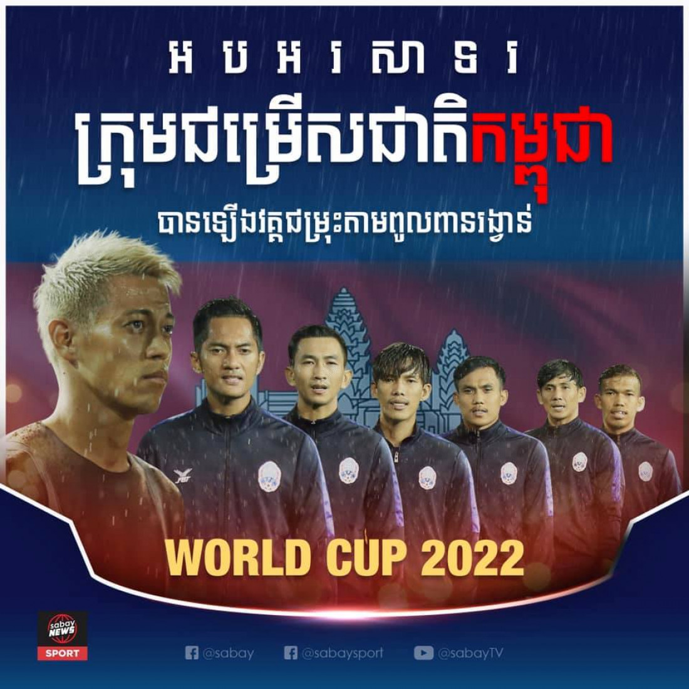
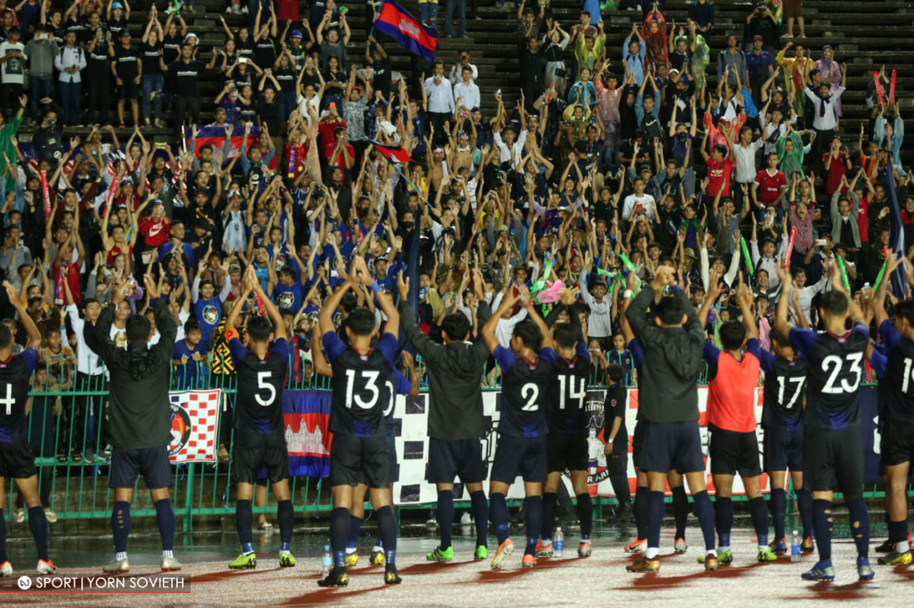

អ្នក
គាំទ្រដឹងហើយថា បាល់ទាត់កម្ពុជារីកចម្រើនខ្លាំងមុនសម័យសង្គ្រាមដែលមានគុណភាពប្រកួតប្រជែងនឹងក្រុមខ្លាំងនៅអាស៊ី និងទទួលបានចំណាត់ថ្នាក់លេខ៤ជើងឯកទ្វីបអាស៊ីកាលពីឆ្នាំ ១៩៧២។ យ៉ាងណា បាល់ទាត់ខ្មែរស្ទើរបាត់សូន្យដោយសារសង្គ្រាមចន្លោះឆ្នាំ១៩៧៥ដល់១៩៧៩។ បន្ទាប់ពីនោះមក បាល់ទាត់កម្ពុជាខំប្រឹងរស់ឡើងវិញជាបណ្តើរៗរហូតដល់សព្វថ្ងៃនេះ។

ប្រហែលជា៥ឆ្នាំចុងក្រោយនេះ បាល់ទាត់កម្ពុជាមានភាពរីកចម្រើនគួរឲ្យកត់សំគាល់ និងបានបង្កើតប្រវត្តិសាស្ត្រសំខាន់ៗរបស់ខ្លួន។
១. ឆ្លងផុតវគ្គជម្រុះបឋមនៃពានរង្វាន់បាល់ពិភពលោកឆ្នាំ២០១៨ ( 2018 FIFA World Cup Qualification) កាលពីឆ្នាំ២០១៥ ។ កម្ពុជា ៣-០ ម៉ាកាវ (ចាន់ វឌ្ឍនាកា ស៊ុតចូល ២ គ្រាប់ និង ឃួន ឡាប៊ូរ៉ាវី ១ គ្រាប់)ជើងទី១ និងជើងទី២នៅទឹកដីម៉ាកាវ ស្មើ ១-១ (ធារី ចន្ថាប៊ីន ស៊ុតចូល១គ្រាប់)។
២. ឆ្លងផុតវគ្គជម្រុះ AFC Asian Cup 2019 ។ ពានរង្វាន់លំដាប់អាស៊ីនេះ ក្រុមជម្រើសជាតិកម្ពុជាបានឆ្លងផុតដោយយកឈ្នះ ក្រុមកោះឆាយនីសតៃប៉ិ ក្នុងទឹកដីខ្លួនឯងដោយលទ្ធផល ២-០ និងស្មើគ្នា ២-២ នៅទឹកដីឆាយនីសតៃប៉ិ។
៣. ឆ្លងផុតវគ្គជម្រុះ AFF Suzuki Cup 2016 ។ ក្រុមជម្រើសជាតិកម្ពុជាបានឆ្លងផុតវគ្គជម្រុះជាលើកដំបូង គិតចាប់តាំងពីឆ្នាំ១៩៩៨ មក។ ក្នុងវគ្គជម្រុះដែលកម្ពុជាធ្វើជាម្ចាស់ផ្ទះនេះ គឺបង្កើតកំណត់ត្រាឈ្នះទាំង៣ប្រកួត គឺប្រកួតទី១ ឈ្នះឡាវ ២-១ ប្រកួតទី២ ឈ្នះប្រ៊ុយណេ ៣-០ និងប្រកួតទី៣ យកឈ្នះទីម័រខាងកើត ៣-២។
៤. យុវជនកម្ពុជាបង្កើតប្រវត្តិសាស្ត្រឡើងវគ្គពាក់កណ្ដាលផ្ដាច់ព្រ័ត្រ AFF U15 Championship 2016 ។ ក្រុមយុវជន១៥ឆ្នាំ បានឡើងទៅវគ្គពាក់កណ្ដាលផ្ដាច់ព្រ័ត្រនៃពានរង្វាន់ជើងឯកអាស៊ាន AFF U15 Championship 2016 បន្ទាប់ពី៥ប្រកួតឈ្នះឡាវ៣-១, ឈ្នះ ប៊្រុយណេ ២-០, ឈ្នះទីម័រ ៣-០ និងចាញ់ថៃ ៦-០។ វគ្គពាក់កណ្ដាលផ្ដាច់ព្រ័ត្រ កម្ពុជា ចាញ់ វៀតណាម ១-០ ហើយប្រកតួតចុងក្រោយចាញ់ថៃ ៣-០ ដោយបានចំណាត់ថ្នាក់លេខ៤។
៥. ក្រុម U21 កម្ពុជា ទទួលបានចំណាត់ថ្នាក់ជើងឯករងពានរង្វាន់ស្តេចប៊្រុយណេ ឆ្នាំ២០១៨ បន្ទាប់ធ្វើបានល្អក្នុងវគ្គសន្សំពិន្ទុឈ្នះ ឡាវ ២-១ និងចាញ់ឥណ្ឌូណេស៊ី ១-០ បានឡើងទៅកាន់វគ្គពាក់កណ្តាលផ្តាច់ព្រ័ត្រ។ នៅវគ្គ៤ក្រុមនេះ កម្ពុជាបានយកឈ្នះក្រុមមីយ៉ាន់ម៉ាដោយលទ្ធផល ២-១ ដើម្បីបានឡើងទៅកាន់វគ្គផ្តាច់ព្រ័ត្រ។ យ៉ាងណា សំណាងមិនល្អ នៅវគ្គផ្តាច់ព្រ័ត្រ កីឡាករ ឆេង ម៉េង ទទួលបានកាតក្រហមចេញពីទីលាន ហើយជាលទ្ធផលចាញ់ទីម័រខាងកើត ១-០ ទទួលបានត្រឹមជើងឯករង។
៦. ឆ្លងផុតវគ្គជម្រុះបឋមនៃពានរង្វាន់បាល់ពិភពលោកឆ្នាំ២០២២ ( 2022 FIFA World Cup និង Asian Cup 2023 Qualification) ឆ្នាំ២០១៩នេះ ។ កម្ពុជាឈ្នះប៉ាគីស្ថាន ២-0 ជើងទី១ (សៀង ចន្ធា ស៊ុតបាន១គ្រាប់ និង គួច សុកុម្ភៈ រកបាន១គ្រាប់) និងជើងទី២នៅកាតារ កម្ពុជាឈ្នះប៉ាគីស្ថាន ២-១ (សេត រ៉ូហ្សេតរកបាន១គ្រាប់ និង រ៉ឹង ប៊ុនហៀងរកបាន១គ្រាប់់។ កម្ពុជាឡើងទៅវគ្គជម្រុះជុំទី២នៅតំបន់អាស៊ី៕
- ឈោកឆៃ របស់ថៃ យកឈ្នះអ្នកប្រដាល់កម្ពុជា១រូបទៀតហើយម្សិលមិញនេះ
- ស្ដេចលើទីលានដីក្រហម Nadal លើកពាន French Open លើកទី១២
- ១១ នាក់ថ្លៃជាងគេលើលោកចេញហើយសរុបតម្លៃ១,៤ប៊ីលានផោន តែគ្មាន Hazard ទេ
ប្រភព៖